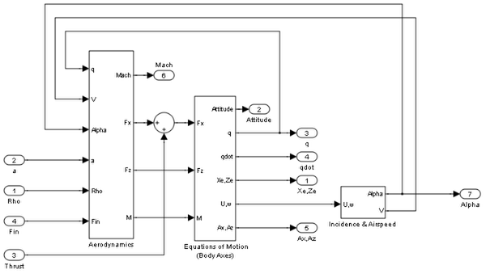
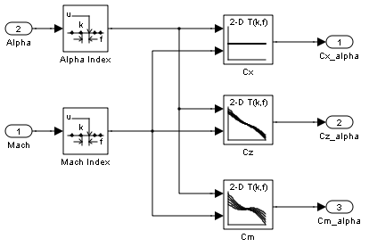
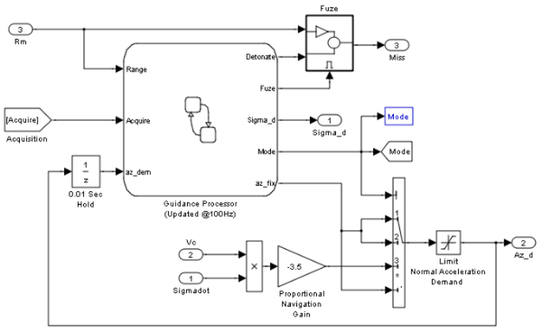
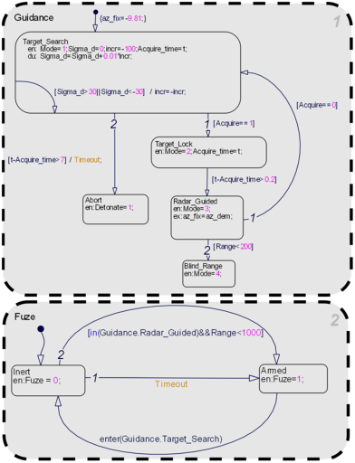
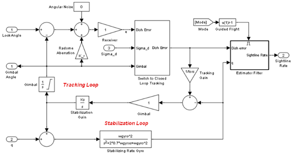
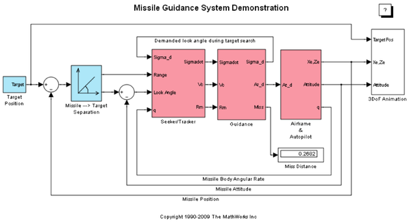
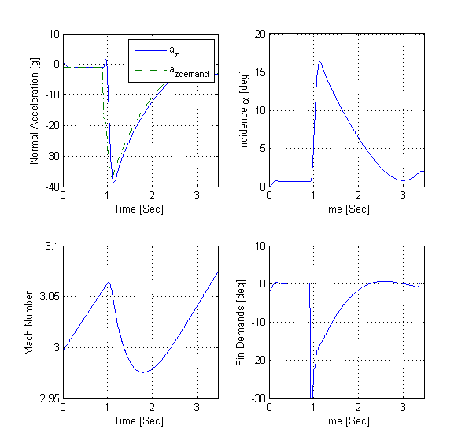
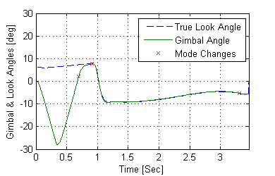
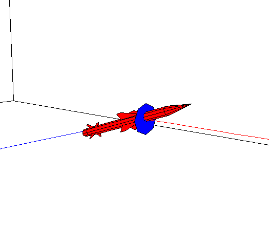

Designing a Guidance System in MATLAB® and Simulink®
The model of the missile airframe used in this demonstration has been presented in a number of published papers (References [1], [2] and [3]) on the use of advanced control methods applied to missile autopilot design. The model represents a tail controlled missile travelling between Mach 2 and Mach 4, at altitudes ranging between 10,000ft (3,050m) and 60,000ft (18,290m), and with typical angles of attack ranging between +/-20 degrees.
Contents
- Model of the Airframe Dynamics
- Representing the Airframe in Simulink
- International Standard Atmosphere Model
- Aerodynamic Coefficients for Constructing Forces and Moments
- Classical Three Loop Autopilot Design
- Airframe Frequency Response
- Homing Guidance Loop
- Guidance Subsystem
- Proportional Navigation Guidance
- Seeker/Tracker Subsystem
- Radome Aberration
- Running the Guidance Simulation
- References
Model of the Airframe Dynamics

The core element of the model is a nonlinear representation of the rigid body dynamics of the airframe. The aerodynamic forces and moments acting on the missile body are generated from coefficients that are non-linear functions of both incidence and Mach number. The model can be created with Simulink® and the Aerospace Blockset™. The aim of this blockset is to provide reference components, such as atmosphere models, which will be common to all models irrespective of the airframe configuration. Simplified versions of the components available in the Aerospace Blockset are included with these demonstrations to give you a sense of the potential for reuse available from standard block libraries.
Representing the Airframe in Simulink
The airframe model consists of four principal subsystems, controlled through the acceleration-demand autopilot. The Atmosphere model calculates the change in atmospheric conditions with changing altitude, the Fin Actuator and Sensors models couple the autopilot to the airframe, and the Aerodynamics and Equations of Motion model calculates the magnitude of the forces and moments acting on the missile body, and integrates the equations of motion.

International Standard Atmosphere Model

The Atmosphere Subsystem that is used is an approximation to the International Standard Atmosphere, and is split into two separate regions. The troposphere region lies between sea level and 11Km, and in this region there is assumed to be a linear temperature drop with changing altitude. Above the troposphere lies the lower stratosphere region ranging between 11Km and 20Km. In this region the temperature is assumed to remain constant.
Aerodynamic Coefficients for Constructing Forces and Moments
The Aerodynamics & Equations of Motion Subsystem generates the forces and moments applied to the missile in body axes, and integrates the equations of motion which define the linear and angular motion of the airframe.
The aerodynamic coefficients are stored in datasets, and during the simulation the value at the current operating condition is determined by interpolation using 2-D lookup table blocks.
Classical Three Loop Autopilot Design
The aim of the missile autopilot is to control acceleration normal to the missile body. In this demonstration the autopilot structure is a three loop design using measurements from an accelerometer placed ahead of the center of gravity, and a rate gyro to provide additional damping. The controller gains are scheduled on incidence and Mach number, and are tuned for robust performance at an altitude of 10,000 ft.
To design the autopilot using classical design techniques requires that linear models of the airframe pitch dynamics be derived about a number of trimmed flight conditions. MATLAB® can determine the trim conditions, and derive linear state space models directly from the non-linear Simulink model, saving both time, and aiding in the validation of the model that has been created. The functions provided by the MATLAB Control System Toolbox™ and Simulink® Control Design™ allow the designer to visualize the behavior of the airframe open loop frequency (or time) responses. To see how to trim and linearize the airframe model you can run the companion demonstration, "Trim and Linearize a Missile Airframe".

Airframe Frequency Response
Autopilot designs are carried out on a number of linear airframe models derived at varying flight conditions across the expected flight envelope. To implement the autopilot in the non-linear model involves storing the autopilot gains in 2 dimensional lookup tables, and incorporating an anti-windup gain to prevent integrator windup when the fin demands exceed the maximum limits. Testing the autopilot in the nonlinear Simulink model is then the best way to demonstrate satisfactory performance in the presence of non-linearities such as actuator fin and rate limits, and with the gains now dynamically varying with changing flight condition.

Figure: Simulink implementation of gain scheduled autopilot
Homing Guidance Loop
The complete Homing Guidance Loop consists of a Seeker/Tracker Subsystem which returns measurements of the relative motion between the missile and target, and the Guidance Subsystem which generates normal acceleration demands which are passed to the autopilot. The autopilot is now part of an inner loop within the overall homing guidance system. Reference [4] provides information on the differing forms of guidance that are currently in use, and provides background information on the analysis techniques that are used to quantify guidance loop performance.
Guidance Subsystem
The function of the Guidance subsystem is to not only generate demands during closed loop tracking, but also perform an initial search to locate the target position. A Stateflow® model is used to control the transfer between these differing modes of operation. Switching between modes is triggered by events generated either in Simulink, or internal to the Stateflow model. Controlling the way the Simulink model then behaves is achieved by changing the value of the variable Mode that is passed out to Simulink. This variable is used to switch between the differing control demands that can be generated. During target search the Stateflow model controls the tracker directly by sending demands to the seeker gimbals (Sigma). Target acquisition is flagged by the tracker once the target lies within the beamwidth of the seeker (Acquire), and after a short delay closed loop guidance starts. Stateflow is an ideal tool for rapidly defining all the operational modes, whether they are for normal operation, or unusual situations. For example, the actions to be taken should there be loss of lock on the target, or should a target not be acquired during target search are catered for in this Stateflow diagram.
 Proportional Navigation Guidance
Once the seeker has acquired the target a Proportional Navigation Guidance (PNG) law is used to guide the missile until impact. This form of guidance law has been used in guided missiles since the 1950s, and can be applied to radar, infrared or television guided missiles. The navigation law requires measurements of the closing velocity between the missile and target, which for a radar guided missile could be obtained using a Doppler tracking device, and an estimate for the rate of change of the inertial sightline angle.

Figure: Proportional Navigation Guidance Law
Seeker/Tracker Subsystem
The aim of the Seeker/Tracker Subsystem is both to drive the seeker gimbals to keep the seeker dish aligned with the target, and to provide the guidance law with an estimate of the sightline rate. The tracker loop time constant tors is set to 0.05 seconds, and is chosen as a compromise between maximizing speed of response, and keeping the noise transmission to within acceptable levels. The stabilization loop aims to compensate for body rotation rates, and the gain Ks, which is the loop cross-over frequency, is set as high as possible subject to the limitations of the bandwidth of the stabilizing rate gyro. The sightline rate estimate is a filtered value of the sum of the rate of change of the dish angle measured by the stabilizing rate gyro, and an estimated value for the rate of change of the angular tracking error (e) measured by the receiver. In this demonstration the bandwidth of the estimator filter is set to half that of the bandwidth of the autopilot.
Radome Aberration
For radar guided missiles a parasitic feedback effect that is commonly modelled is that of radome aberration. It occurs because the shape of the protective covering over the seeker distorts the returning signal, and then gives a false reading of the look angle to the target. Generally the amount of distortion is a nonlinear function of the current gimbal angle, but a commonly used approximation is to assume a linear relationship between the gimbal angle and the magnitude of the distortion. In the above system, the radome aberration is accounted for in the gain block labeled "Radome Aberration". Other parasitic effects, such as sensitivity in the rate gyros to normal acceleration, are also often modelled to test the robustness of the target tracker and estimator filters.

Figure: Radome aberration geometry
Running the Guidance Simulation
Now to demonstrate the performance of the overall system. In this case the target is defined to be travelling at a constant speed of 328m/s, on a reciprocal course to the initial missile heading, and 500m above the initial missile position. From the simulation results it can be determined that acquisition occurred 0.69 seconds into the engagement, with closed loop guidance starting after 0.89 seconds. Impact with the target occurred at 3.46 seconds, and the range to go at the point of closest approach was calculated to be 0.265m.
The aero_guid_plot.m script creates a performance analysis
  
The animation block provides a visual reference for the simulation
References
1. "Robust LPV control with bounded parameter rates", S.Bennani, D.M.C. Willemsen, C.W. Scherer, AIAA-97-3641, August 1997.
2. "Full Envelope Missile Longitudinal Autopilot Design using the State-Dependent Riccati Equation Method", C.P.Mracek and J.R. Cloutier, AIAA-97-3767, August 1997.
3. "Gain-Scheduled Missile Autopilot Design Using Linear Parameter Varying Transformations", J.S.Shamma, J.R. Cloutier, Journal of Guidance, Control and Dynamics, Vol. 16, No. 2, March-April 1993.
4. "Modern Navigation, Guidance, and Control Processing Volume 2", Ching-Fang Lin, ISBN 0-13-596230-7, Prentice Hall, 1991.